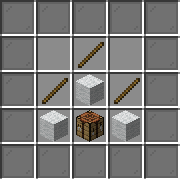
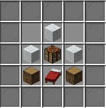
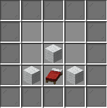
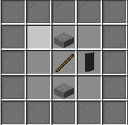
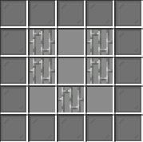
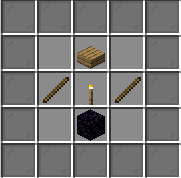
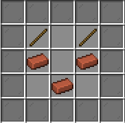

Ev
Hakkında
Oyun Modları
Market
Oy
Ekibimiz
Yeni Eşyalar
Contact
☰
OYUNDAKİ EŞYALARIN YAPIMI
OYNA.TERRACRAFT.TK
Çadır - 1

Çadır - 2

Çadır - 3

Açılıp Kapana Bilen Bayrak/h3>

Çöp Kutusu

Küçük Fener

Saksı

Açılıp Kapanan Mektup Kutusu
Açılıp Kapanan Sokak Lambası
Yatay Durabilen Oturabilir Kütük
Silah Standı
Okul Sandalyesi